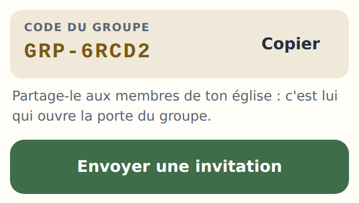
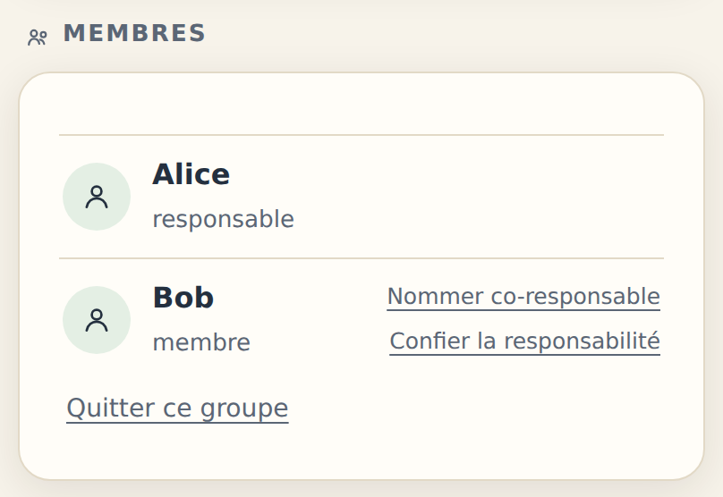
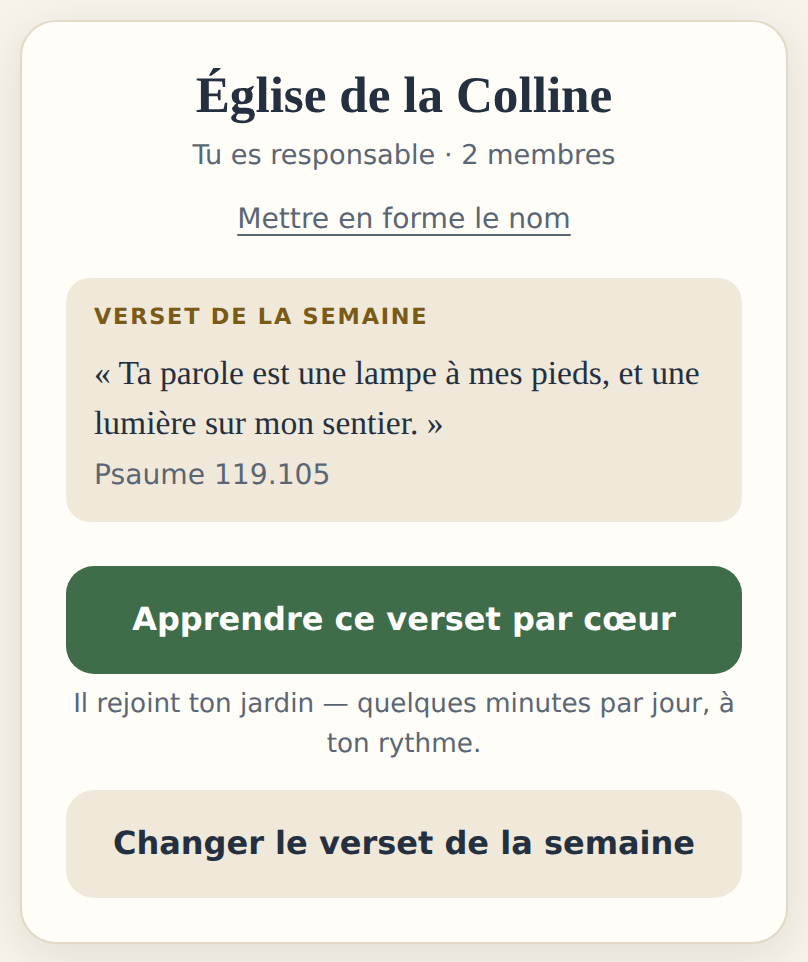
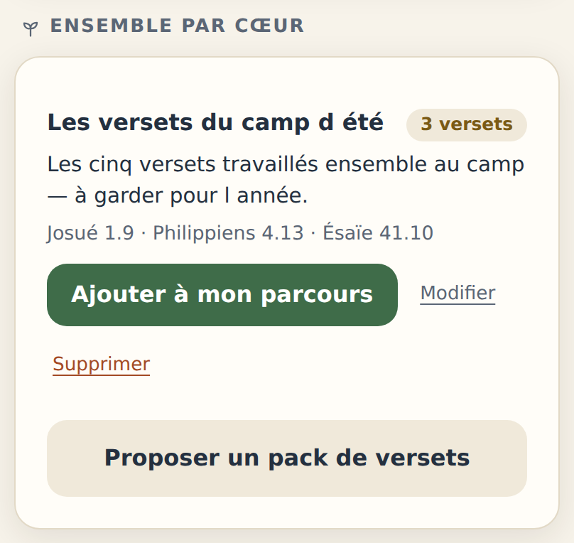
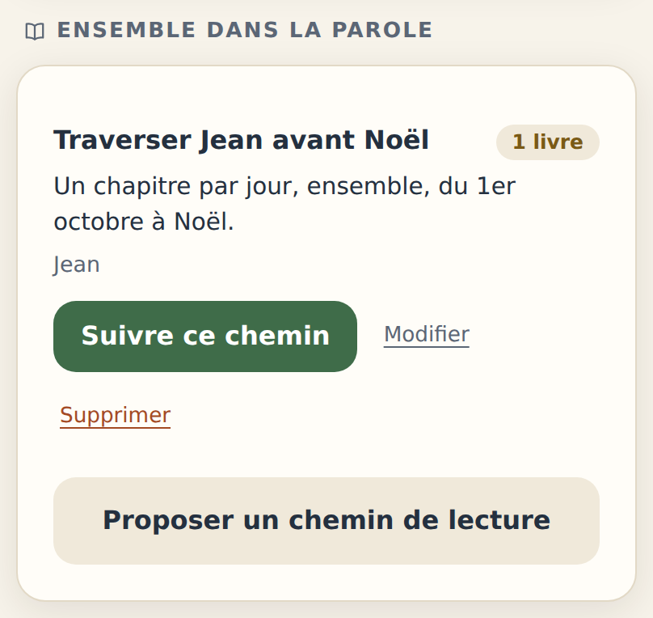
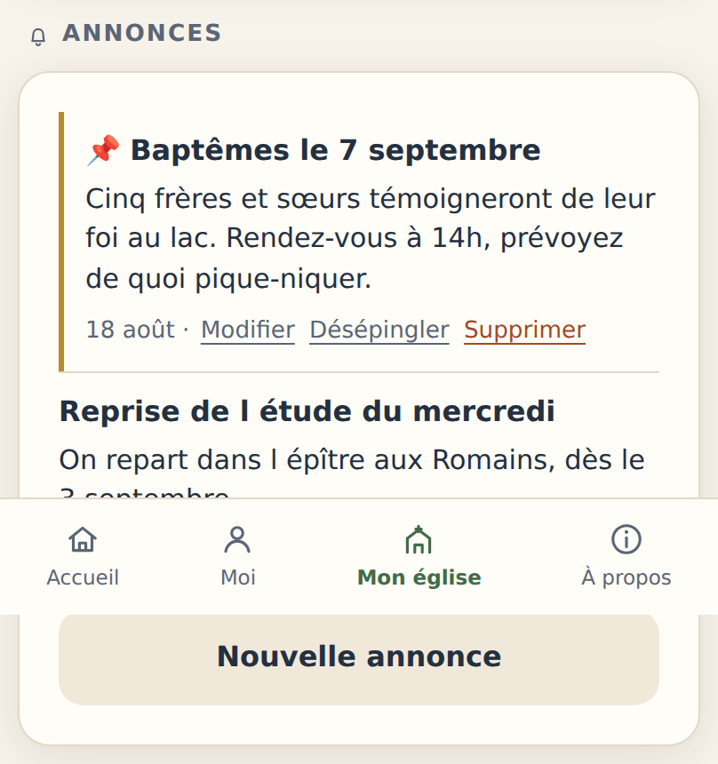
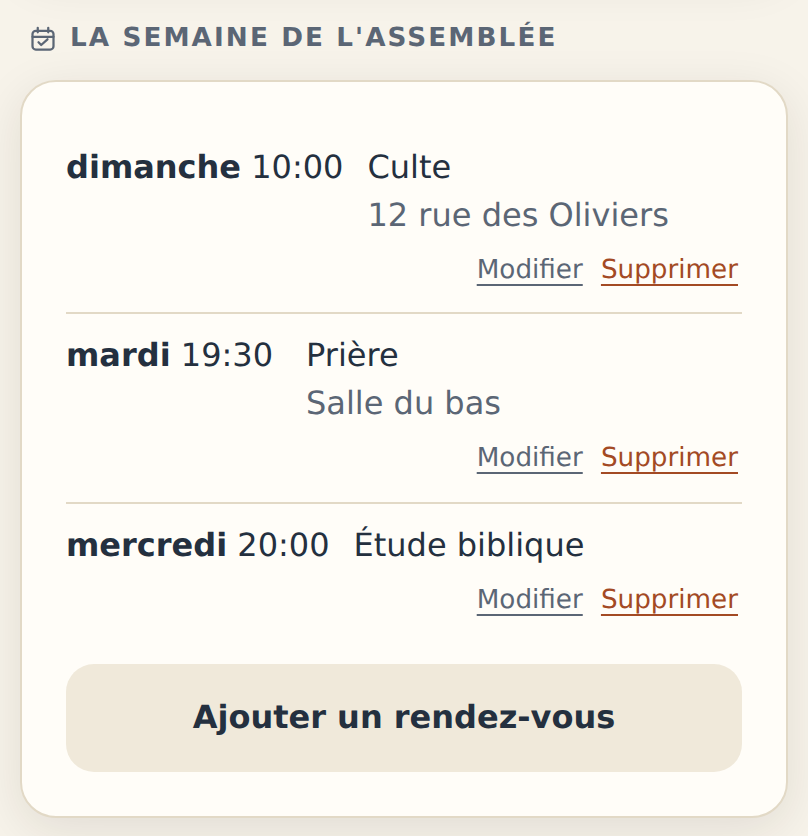
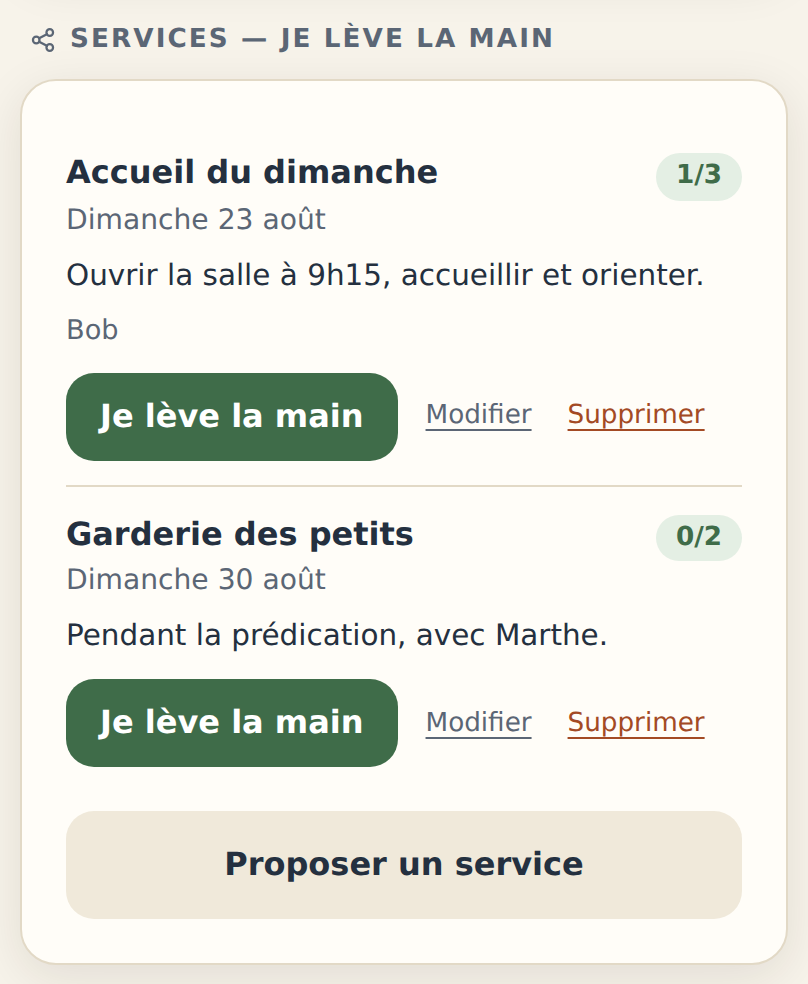
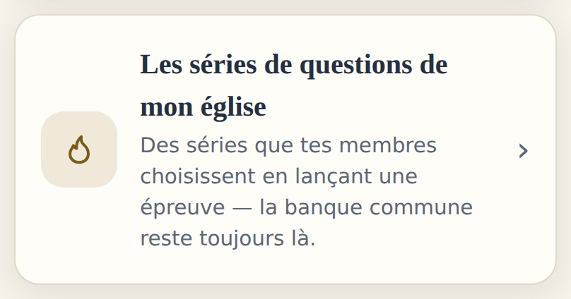
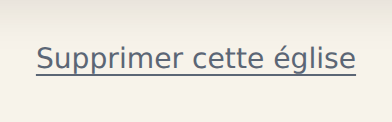

Ton église vient d'ouvrir. Voici ce que tu peux en faire — faire entrer ton assemblée, la nourrir chaque semaine, et confier la suite à d'autres quand le moment viendra.
Ton église existe, et tu en portes la responsabilité.
Une église sur Bible Horizon, ce n'est pas un salon de discussion de plus. C'est un point de rassemblement discret : le verset que toute l'assemblée porte cette semaine, les nouvelles, les rendez-vous, les coups de main à donner. Chacun y vient à son rythme, et personne ne voit ce que les autres apprennent — la mémorisation reste un jardin privé.
Le nom de ton église, en tête de l'onglet Mon église. Tu peux le mettre en forme (classique, moderne ou solennelle ; discrète, posée ou majestueuse).
| Le geste | Pourquoi d'abord | |
|---|---|---|
| 1 | Poser le verset de la semaine. C'est la première chose que verra quiconque rejoint. | Une église vide dit « rien ne se passe ici ». |
| 2 | Écrire une annonce et poser les rendez-vous — le culte, la prière, l'étude. | Ça rend l'écran utile dès la première visite. |
| 3 | Inviter deux ou trois personnes, pas toute l'assemblée. | On essuie les plâtres à petit comité. |
Rien n'est urgent. Une église qui reçoit un verset par semaine et une annonce par mois est déjà vivante. Mieux vaut un rythme tenu qu'un grand déploiement abandonné en octobre.
| Geste | Responsable | Co-responsable |
|---|---|---|
| Poser le verset, les annonces, les rendez-vous, les services | oui | oui |
| Proposer des packs de versets et des chemins de lecture | oui | oui |
| Écrire les séries de questions | oui | oui |
| Nommer et retirer des co-responsables | oui | non |
| Mettre en forme le nom de l'église | oui | non |
| Confier la responsabilité, supprimer l'église | oui | non |
Deux chemins : un code à dire, ou un lien qui fait tout.
Cinq caractères après GRP-. On le donne de vive voix, on le projette, on l'écrit sur la feuille de chants. Celui qui a déjà un compte le colle dans Moi → Rejoindre une église.
Envoyer une invitation prépare un message tout fait avec un lien. Celui qui le reçoit n'a rien à recopier : le compte se crée et le groupe se rejoint d'une traite. C'est le chemin à privilégier par SMS ou WhatsApp.

Le code n'est pas un secret, mais il n'est pas public non plus. Qui l'a, entre — et voit les annonces, les rendez-vous et les services de l'assemblée. Réserve-le aux gens de ton église plutôt que de le poser sur un site ou un réseau social.

Chacun apparaît avec son pseudo et son rôle. Aucune adresse e-mail, aucun numéro : Bible Horizon ne te donne pas l'annuaire de ton assemblée, et ne le donne à personne d'autre.
Depuis cette liste tu peux nommer un co-responsable et confier la responsabilité. Les deux gestes sont détaillés à la dernière page.
Un verset, des packs, un chemin de lecture — et le pont vers le jardin de chacun.
Une référence, un texte. Il s'affiche en tête de l'écran pour tout le monde, et chacun peut l'apprendre par cœur d'un seul geste : le bouton le fait entrer dans son jardin, où la révision espacée s'occupe du reste.
Personne ne voit qui l'a appris ni où il en est. C'est délibéré : la mémorisation ne doit jamais devenir un classement.
Change-le quand tu veux — le dimanche soir est un bon rendez-vous.


Un pack rassemble plusieurs versets sous un titre : ceux d'un camp, d'une série de prédications, d'une retraite. Le membre l'adopte quand il le veut ; les versets rejoignent alors son parcours et deviennent son objectif en cours.
Tu proposes, tu ne réquisitionnes pas : l'adoption est un geste local — rien ne remonte, tu ne sauras jamais qui a adopté quoi.
Un chemin, c'est une traversée proposée à toute l'assemblée : un évangile avant Noël, les psaumes pendant le carême, la Genèse à la rentrée. Le membre qui le suit le retrouve dans le module Marcher, à son rythme.
Là encore, personne n'est pointé. Un chemin proposé et suivi par trois personnes vaut mieux qu'un plan imposé et abandonné par trente.

Annonces, rendez-vous, services — ce qui remplace le tableau d'affichage.
Une nouvelle, un titre, un texte. Tu peux en épingler une : elle monte en tête et y reste — pratique pour l'événement du mois.
Écris-les comme tu parles. Une annonce datée, courte et concrète vaut mieux qu'un communiqué.


Les rendez-vous réguliers : un jour, une heure, un lieu. Le culte du dimanche, la prière du mardi, l'étude du mercredi.
C'est ce que cherche en premier quelqu'un qui découvre ton église — et c'est ce qu'on oublie le plus souvent de mettre à jour quand un horaire change.
Un service, c'est un coup de main daté avec un nombre de places : accueil, garderie, sono, ménage. Personne n'est désigné — chacun lève la main s'il le veut, et peut se retirer.
Le compteur montre où en est le remplissage, et les prénoms de ceux qui se sont proposés s'affichent : c'est souvent ça qui décide le suivant.
Un rappel doux part la veille au soir, par notification, à ceux qui ont levé la main et activé les notifications de l'application. Un seul, jamais deux.

Quatre épreuves bibliques, et des séries que tu écris toi-même.
Bible Horizon propose quatre épreuves — Qui, où, quand ?, Qui a dit ?, Écrit… ou pas ? et De qui parle-t-on ? — avec une banque de questions commune à tout le monde.
Ton église peut y ajouter ses propres séries : les questions d'une prédication, d'une étude, d'un camp. Une série s'ajoute au choix du joueur, elle ne remplace jamais la banque commune.
On y joue seul, à plusieurs sur un même téléphone, à distance par code — et en direct dans l'assemblée, l'animateur révélant les indices sur grand écran.

La porte, dans le coin de l'équipe.
Un guide entier y est consacré — écrire une bonne
question, les longueurs de chaque champ, publier et archiver :
biblehorizon.fr/guide/mode-emploi-banque-de-questions.pdf
Le lien est aussi en bas de l'écran des séries, dans l'application.
Les questions d'une série publiée sont visibles de toute personne à qui un membre partage un code de partie — pas seulement de l'assemblée. Elles portent sur le texte biblique ; Bible Horizon peut retirer celles qui s'en écartent. Un lien « Signaler un contenu » est offert à chaque joueur, sous le choix des questions.
Partager la charge, la transmettre, et savoir s'arrêter.
Depuis la liste des membres. Un co-responsable nourrit l'assemblée exactement comme toi : le verset, les annonces, les rendez-vous, les services, les packs, les chemins, les séries de questions. Il ne peut ni nommer d'autres co-responsables, ni transmettre, ni supprimer l'église — ces trois-là restent à toi seul.
C'est le premier geste à faire dès que l'écran vit vraiment : une église qui dépend d'une seule personne s'éteint le jour où cette personne est fatiguée.
Un clic depuis la liste des membres, et c'est fait : le successeur devient responsable, tu redeviens simple membre. Rien n'est perdu — l'église, sa page et ses séries lui passent entières entre les mains.
C'est aussi le passage obligé si tu veux quitter l'église : tant qu'il reste quelqu'un, un responsable ne peut pas partir sans avoir transmis.
Un même compte porte au maximum deux églises. Au-delà, il faut en transmettre une. C'est délibéré : au-delà de deux assemblées, on ne porte plus, on administre.
Tout en bas de Mon église, pour le responsable seul. Il faut recopier le nom de l'église pour confirmer — puis tout part : la page, les annonces, les rendez-vous, les services, les séries, les packs et les chemins.
Ce que chacun a semé dans son jardin lui reste. Les versets appris, les lectures faites, les progrès de mémorisation vivent sur l'appareil de chacun et ne dépendent pas de l'église.

Discret, et sans retour possible.
Ce qui compte, et ce qui ne compte pas.
Bible Horizon ne cherche pas à occuper les gens. Pas de série à ne pas briser, pas de classement, pas de notification qui culpabilise. Un verset est offert chaque jour ; celui qui le laisse passer ne perd rien.
Ton église hérite de cet esprit. Tu proposes — un verset, un pack, un chemin, un service — et chacun répond comme il peut. Tu ne verras jamais qui a appris quoi, ni qui a lu jusqu'où : ce n'est pas une lacune de l'application, c'est sa promesse. Ce que tu peux voir, ce sont les mains levées pour un service, et c'est bien assez.
La seule chose qui compte vraiment se passe hors de l'écran : quelqu'un de ton assemblée qui, un mardi soir, sait par cœur un verset qu'il ne connaissait pas en septembre. Le reste n'est que de l'outillage.
Une difficulté, une idée, un contenu qui te gêne ? Écris à contact@biblehorizon.fr. C'est un petit projet : quelqu'un lit vraiment, et répond.
| Si tu veux… | Va… |
|---|---|
| Poser le verset de la semaine | Mon église → Changer le verset de la semaine |
| Inviter quelqu'un sans lui dicter un code | Mon église → Envoyer une invitation |
| Annoncer une nouvelle qui doit rester en tête | Nouvelle annonce, puis Épingler |
| Demander un coup de main sans désigner personne | Proposer un service |
| Partager la charge | Membres → Nommer co-responsable |
| Passer la main | Membres → Confier la responsabilité |
| Écrire des questions pour une prédication | Les séries de questions de mon église |
| Signaler un problème, poser une question | contact@biblehorizon.fr |
Bible Horizon — biblehorizon.fr · contact@biblehorizon.fr
Gratuit, sans publicité, sans revente de données. Les captures de ce guide viennent de
l'application telle qu'elle est aujourd'hui ; si un écran a changé, c'est l'application qui a raison.